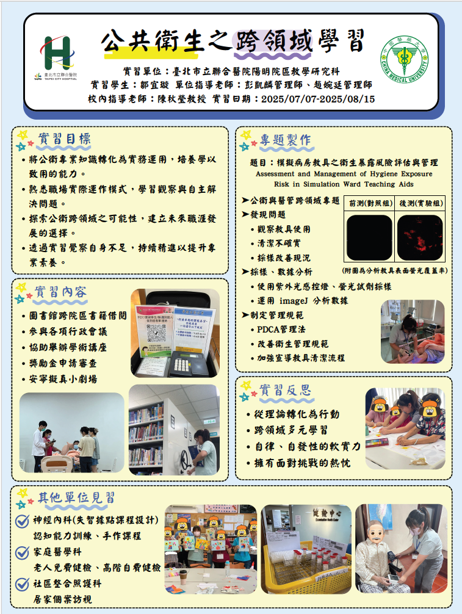
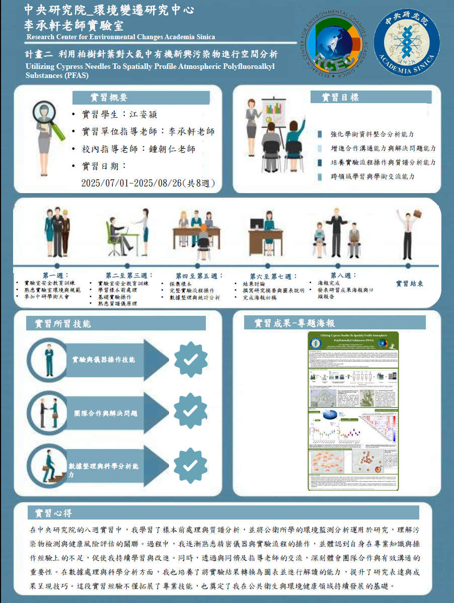
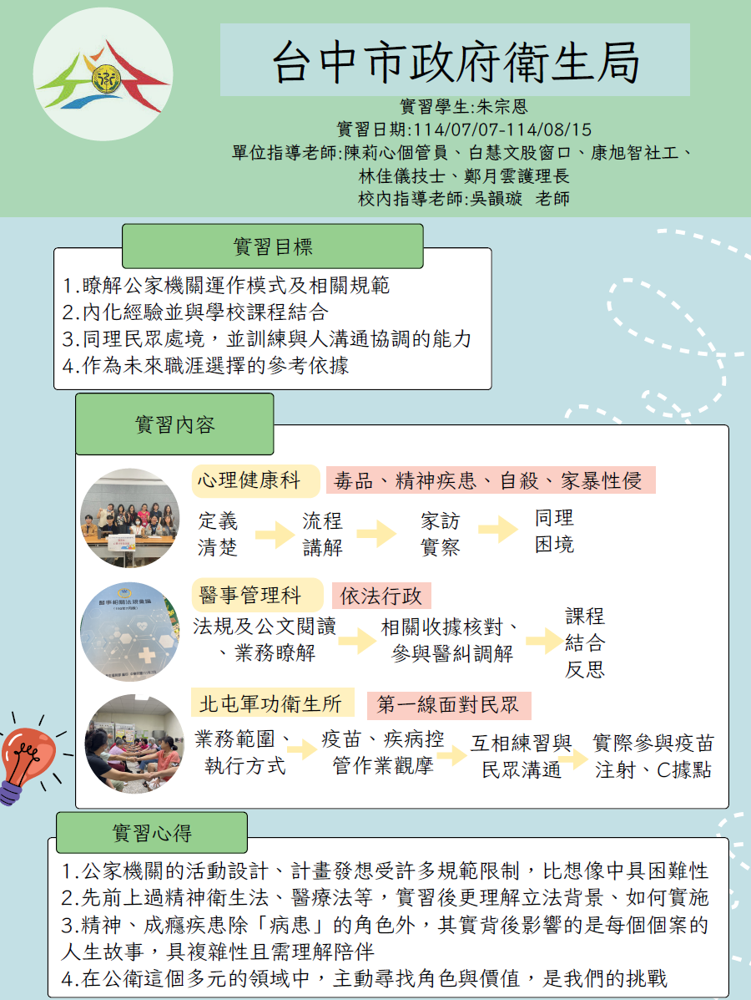
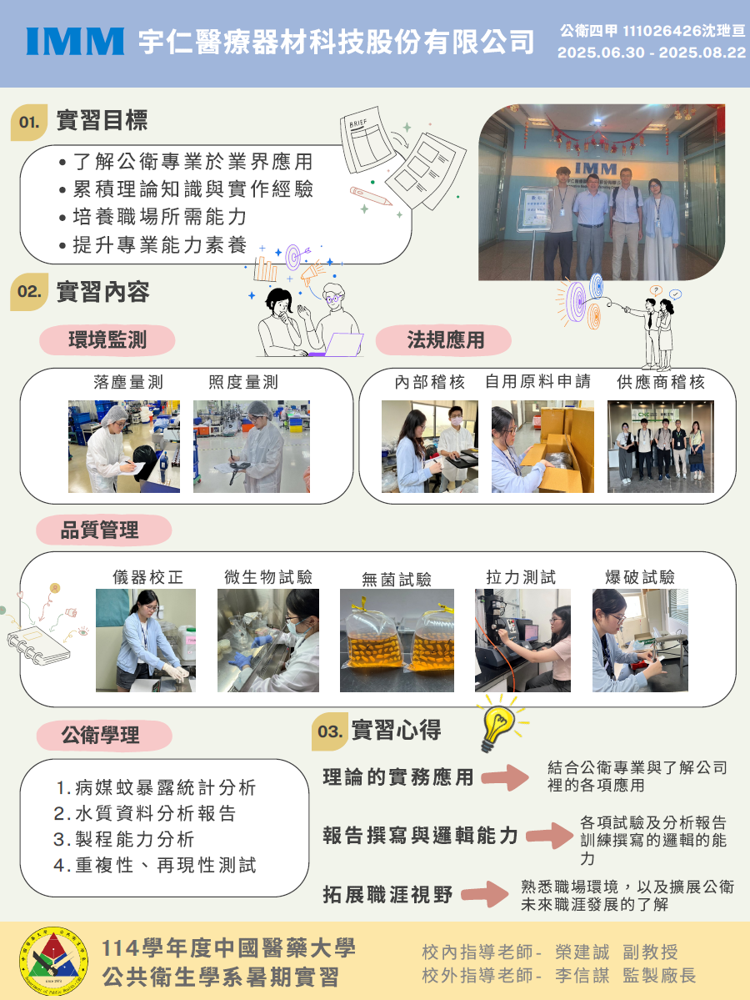
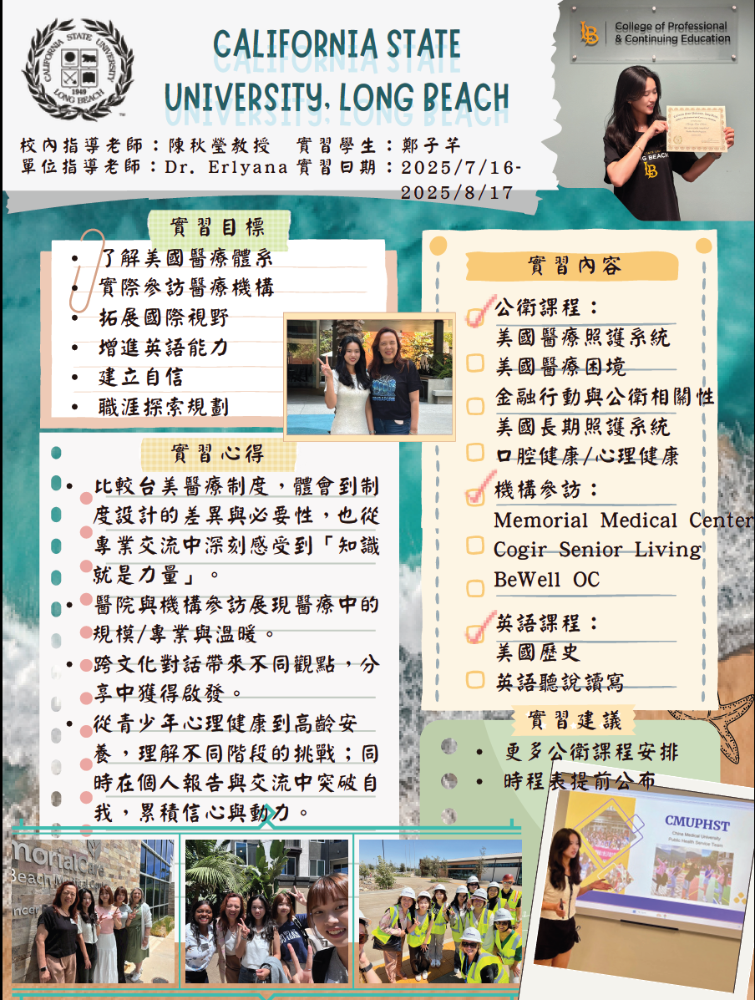

歷屆實習成果與經驗傳承
透過學長姐的實務心得與成果展示，拓展公衛視野，規劃屬於你的實習藍圖。
學長姐實習心得資源
學校內部雲端下載路徑
請登入學校系統入口網後，依循下列目錄尋找：
學校入口網 ➔ 網路文件 ➔ 共用文件區 ➔ 公共衛生學系 ➔ 實習資料 ➔ (依單位分類)102-115學年度公衛系學生實習書面報告
學校入口網 ➔ 網路文件 ➔ 共用文件區 ➔ 公共衛生學系 ➔ 實習資料
精選優秀實習成果摘要
節錄優秀學長姐的心得精華與專題海報結構，讓你搶先了解實習的實務收穫：
 核心實務心得節錄
核心實務心得節錄
醫院行政決策旁聽： 透過旁聽由院長主持的行政與醫務會議，觀察病患滿意度調查、環境清潔維護與病房感染率追蹤等實務議題。這讓我深刻體會到，公衛數據在醫院管理現場並非抽象報表，而是持續優化醫療品質與感管決策的科學依據。
醫學教育與擬真活動： 協助籌備「安寧擬真小劇場」，實際觀摩 PGY 住院醫師透過標準化病人模擬，學習如何與家屬溝通安寧照護決策、瀕死期關懷與悲傷輔導，切身體會醫療行政背後的人文溫度。
跨單位社區方案： 前往神經內科失智據點為長輩設計認知延緩失能遊戲；跟隨家醫科與社區整合照護科深入老人定期健檢與居家醫療訪視，實地串聯長照與居家醫療方案。

核心實務心得節錄
科研嚴謹態度： 透過操作質譜儀(LC-MS/MS)與處理高解析數據，熟悉科學研究的嚴謹性，理解每一個看似微小的步驟都可能產生誤差， 必須經過多次確認確保數據準確。
數據視覺化溝通： 學習將原始數據轉化為科學證據，體會到學術成果呈現是一種科學溝通的藝術， 需兼顧專業嚴謹度與視覺易讀性。
跨領域整合： 確立了環境科學與公共衛生交會的研究方向，理解科學研究如何回應現實的環境與健康問題。

核心實務心得節錄
心理健康實務： 在毒品防制股實習中了解到藥癮是一種慢性疾病，應以「人」而非「病人」的角度同理個案， 發覺支持應從他們對生活的熱情出發，而非社會期待。
法規與政策連結： 在醫事管理科體會到「依法行政」的重要性， 並參與醫療爭議調解會，理解「事故預防」的概念與公衛「預防勝於治療」的理念不謀而合。
第一線溝通價值： 在衛生所接觸民眾時，意識到溝通技巧與保密義務在實務中至關重要， 並領悟到「你覺得沒有被需要，是因為你還沒創造出那個被需要的位置」。

核心實務心得節錄
業界學理應用： 熟悉公共衛生知識在醫材廠的實際應用，例如利用生物統計與流行病學方法協助檢測結果分析， 以數據支持品質管理與改善。
實驗細節把關： 實際參與無塵室落塵量測、水質檢驗與產品功能測試， 領悟到許多測試的關鍵並不在儀器運轉，而是在於前期累積的細節與準備。
稽核系統理解： 參與內部及國外客戶稽核，認識文件管理與法規遵循(如 ISO 標準) 對產品合法性與公司運作的重要性。

核心實務心得節錄
醫療制度反思： 比較台美醫療體系，認同台灣健保的便利性，但也理解美國醫療制度的複雜性是因應其幅員廣闊與族群多元的必要架構。
專業溝通自信： 在與醫院財務長及執行長對談中，深切體會到「知識就是力量」， 學得越多就越有深度與自信來表達自己。
公衛特質養成： 透過與專業醫師交流，體認到同理心、韌性以及清晰的使命感是公共衛生工作中不可或缺的特質。

實習結束後的發表與傳承活動
暑期實習平安結束、邁入大四上學期後，系上將舉辦三大核心發表活動。這不僅是展現豐碩成果的舞台，更是榮譽與經驗傳承的交響曲：
實習心得成果報告 大四上學期初期
這是全體大四同學正式展現暑期成果的必修舞台。每位同學將透過口頭簡報與完整書面報告，向系上審查教授及台下學弟妹發表實習期間的所學、專題成果與反思。
公共衛生聯合年會 - 公共衛生實習論壇 大四上學期
台灣公共衛生學界每年最盛大的學術研討盛會。年會中特別設有「公共衛生系所實習經驗分享與交流」口頭發表與海報展示單元。
實習經驗傳承分享會 大三選填志願前
由系學會精心主辦的溫馨傳承盛會。透過大四學長姐的親身擺攤與座談經驗分享，帶領同學進一步了解醫療機構、政府衛生局、環境檢驗或醫藥產業等不同實習機構的真實工作內容、行政庶務與生活適應。
藉由師生、學長姐與學弟妹面對面的深度討論，讓同學們對公衛各領域的職涯實務有更清楚的認識，利於未來生涯規劃。
特別舉辦在大三同學選填實習志願表單之前。讓大三能與大四及負責老師（周子傑老師）直接交流，不再迷茫，精準找到最適合自己的暑期實習舞台！